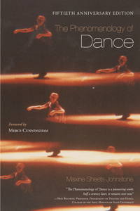

<body bgcolor="#FFFFFF" text="#000000" link="#0000FF" vlink="#CC0000" alink="#CC0000"><center><hr width="350" size="1" align="center" noshade>The classic book on the nature of movement and dance, now available to a new generation of dancers and students of dance<hr width="350" size="1" align="center" noshade><p><a href="https://cdcshoppingcart.uchicago.edu/Cart/ChicagoBook.aspx?ISBN=9781439912614&&PRESS=temple" target="_top">Buy this book!</a> | <a href="https://cdcshoppingcart.uchicago.edu/Cart/Cart.aspx?PRESS=temple" target="_top">View Cart</a> | <a href="https://cdcshoppingcart.uchicago.edu/Cart/Cart.aspx?PRESS=temple" target="_top">Check Out</a></p><p></p></center><!--none//--><h1>The Phenomenology of Dance</h1>
<H2>Foreword by Merce Cunningham</H2>
<h3>Maxine Sheets-Johnstone</h3>
<P>cloth 1-4399-1261-0 $79.50, Jun 15, <FONT COLOR=#990033>Available</FONT>
<br>paper 1-4399-1262-9 $19.95, Jun 15, <FONT COLOR=#990033>Available</FONT>
<br>Electronic Book 1-4399-1263-7 $19.95 <FONT COLOR=#990033>Available</FONT>
<BR> 152 pp
5.5x8.25
</P><BLOCKQUOTE><I>�Not all pioneering works become classics, but Maxine Sheets-Johnstone�s </i>The Phenomenology of Dance<i> has. Like her other philosophical works�and like dance at its best�this one brims with vitality, originality, force, clarity, and conviction. It moves within dance performance and the aesthetic appreciation of dance and engages phenomenology as a living method of description with the dynamic lived-experience of dancing. It is precisely because creativity is at the heart of dance, and indeed at the core of the person as interpersonal, that education itself can and should, as Sheets-Johnstone suggests, become a means to creativity, performance, and criticism�a means to dance.� </i><br>&#151<b>Anthony J. Steinbock</b>, Director, Phenomenology Research Center, and Professor of Philosophy, Southern Illinois University, Carbondale</I></BLOCKQUOTE>
<P>When <i>The Phenomenology of Dance</i> was first published in 1966, Maxine Sheets-Johnstone asked: �When we look at a dance, what do we see?� Her questions about the nature of our experience of dance and the nature of dance as a formed and performed art are still provocative and acutely significant today. Sheets-Johnstone considers dance as an aesthetic mode of expression, and integrates theories of dance into philosophical discussions of the nature of movement.
<P>Back in print after nearly 20 years, <I>The Phenomenology of Dance</I> provides an informed approach to teaching dance and to dance education, appreciation, criticism, and choreography. In addition to the foreword by Merce Cunningham from the original edition, and the preface from the second edition, this fiftieth anniversary edition includes an in-depth introduction that critically and constructively addresses present-day scholarship on movement and dance.
<BR>&nbsp;<h2>Excerpt</h2><P>Excerpt available at <a href="http://www.temple.edu/tempress">www.temple.edu/tempress</a></p>
<BR>&nbsp;<h2>Reviews</h2>
<p><i>"I have come to know </i>The Phenomenology of Dance<i> since its inception. Maxine Sheets-Johnstone�s movement consciousness shines throughout. Her experience as a dancer, critical reflections on dance, and ability to significantly raise the profile of kinesthetic experience and memory provide us with a vessel for the depth of this volume. Dance and movement have grown substantially, and this new edition comes at a time when neuroscience is demonstrating the importance of the body to our experience of our world. </i>The Phenomenology of Dance<i> is essential reading."</i> <br>&#151<b>Helen Payne</b>, Professor of Psychotherapy, School of Education, University of Hertfordshire, England
<p><i>"This is a pathbreaking book both for dance studies and for phenomenology. It teaches dance scholars how to analyze the lived experience of movement in dance and its implications for dance education, performance, and criticism. It teaches phenomenologists that dance is a central, even unavoidable concern for anyone interested in the lived body. Sheets-Johnstone places dance studies front and center as a philosophical issue."</i> <br>&#151<b>Robert P. Crease</b>, Professor, Department of Philosophy, Stony Brook University
<p><i>"</i>The Phenomenology of Dance<i> is both a germinal work in dance philosophy and a unique advocacy statement for a phenomenological approach to dance in education. Sheets-Johnstone�s vision of dance was ahead of its time, as cogent today as in 1966."</i> <br>&#151<b>Karen E. Bond</b>, Associate Professor, Department of Dance, Temple University
<p><i>"[A] welcome reprint of a classic work.... the book is a joy to read. Sheets-Johnstone�s rhythm and cadence in her use of language is reminiscent of the movement of dance. She employs a particular repetition of phrase with slight emendations in each that is not only philosophically effective, but also reminds the reader of a theme and recapitulation that might be experienced in dance. Hopefully, read for whatever reasons, this book will continue what it began in the 1960s and will expand the field of the philosophy of movement."</i> <br>&#151<b><i>Sport, Ethics and Philosophy</i></b>
<p><i>"This anniversary edition offered the author yet another chance to revisit her original text.... [A]s her peers have repeatedly stated, </i>The Phenomenology of Dance<i> has been a book ahead of its time, still a key-read today, not just about what phenomenology can contribute to dance, but also about what dance has to offer in any philosophical study of the lived experience."</i><br>&#151<b><i>Choros: International Dance Journal</i></b>
<BR>&nbsp;<h2>Contents</h2><P>
<p>Foreword by Merce Cunningham
<br>Preface to the Fiftieth Anniversary Edition
<br>Preface to the Second Edition
<br>
<br>1. Perspective
<br>2. Phenomenology: An Approach to Dance
<br>3. A Phenomenological Account of the Illusion of Force
<br>4. The Plastic Components of Virtual Force
<br>5. Abstraction
<br>6. Expression
<br>7. Dynamic Line
<br>8. More on Dynamic Line: A Phenomenological Concept of Rhythm
<br>9. The Imaginative Space of Dance
<br>10. Educational Implications: Dance Composition
<br>11. Educational Implications: Dance as Art
<br>
<br>Bibliography
</P><BR>&nbsp;<H2>About the Author(s)</H2>
<P><b>Maxine Sheets-Johnstone</b> is an Independent Scholar and Courtesy Professor in the Department of Philosophy at the University of Oregon. In addition to authoring articles in over seventy art, humanities, and science journals, she has authored nine books, including <i><a href="748_reg.html" target="_top">The Roots of Thinking</a></i> (Temple), and <i>The Corporeal Turn: An Interdisciplinary Reader</i>.</P>
<BR><H2>Subject Categories</H2>
<p><A HREF="/tempress/music.html" TARGET="_top">Music and Dance</a>
<BR><A HREF="/tempress/philosophy.html" TARGET="_top">Philosophy and Ethics</a>
<BR><A HREF="/tempress/sports.html" TARGET="_top">Sports</a>
</p>
<p align="center"><a href="https://cdcshoppingcart.uchicago.edu/Cart/ChicagoBook.aspx?ISBN=9781439912614&&PRESS=temple" target="_top">Buy this book!</a> | <a href="https://cdcshoppingcart.uchicago.edu/Cart/Cart.aspx?PRESS=temple" target="_top">View Cart</a> | <a href="https://cdcshoppingcart.uchicago.edu/Cart/Cart.aspx?PRESS=temple" target="_top">Check Out</a></p><p><font face="Arial" size="1"><a href="copyright.html" onMouseOver="window.status='Web Copyright Policy';return true;" onMouseOut="window.status=''" title="Web Copyright Policy">&copy;</a> 2016 <a href="http://www.temple.edu" target="new" onMouseOver="window.status='Link to Temple University home page';return true;" onMouseOut="window.status=''" title="Link to Temple University home page">Temple University</a>. All Rights Reserved. http://www.temple.edu/tempress/titles/2368_reg.html</font></p>